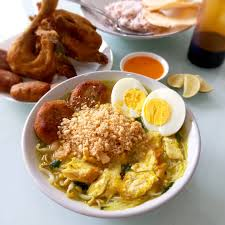

Soto

Soto (juga dikenal dengan beberapa nama lokal seperti, sroto, sauto, tauto, atau coto) adalah makanan khas Indonesia seperti sop yang terbuat dari kaldu daging dan sayuran. Daging yang paling sering digunakan adalah daging sapi dan daging ayam, tetapi ada pula yang menggunakan daging babi, daging kuda atau daging kambing. Berbagai daerah di Indonesia memiliki soto khas daerahnya masing-masing dengan komposisi yang berbeda-beda, misalnya Soto Madura, Soto Kediri, Soto Pemalang, Soto Lamongan, Soto Jepara, Soto Bening Solo, Soto Semarang, Soto Kudus, Soto Betawi, Soto Padang, Soto Bandung, Sauto Tegal Tauto Pekalongan, Sroto Sokaraja, Sroto Kriyik, Sroto Bancar, Soto Banjar, Soto Medan, Coto Makassar, dan Coto Kuda Jeneponto. Soto juga diberi nama sesuai isinya, misalnya Soto ayam, Soto babat, atau Soto kambing. Ada pula soto yang dibuat dari daging kaki sapi yang disebut dengan soto sekengkel.
Cara penyajian soto berbeda-beda sesuai dengan khas di setiap daerah. Soto biasa dihidangkan dengan nasi, lontong, ketupat, mie, atau bihun. Untuk menambah cita rasa dan kelezatan, biasanya disertai dengan berbagai macam pelengkap, misalnya kerupuk, perkedel, emping, sambal, dan sambal kacang. Ada juga yang menambahkan telur puyuh, sate kerang, jeruk limau, berbagai macam gorengan (tempe, tahu, bakwan), bawang goreng, seledri, tauco, dan koya.(Wikipedia)